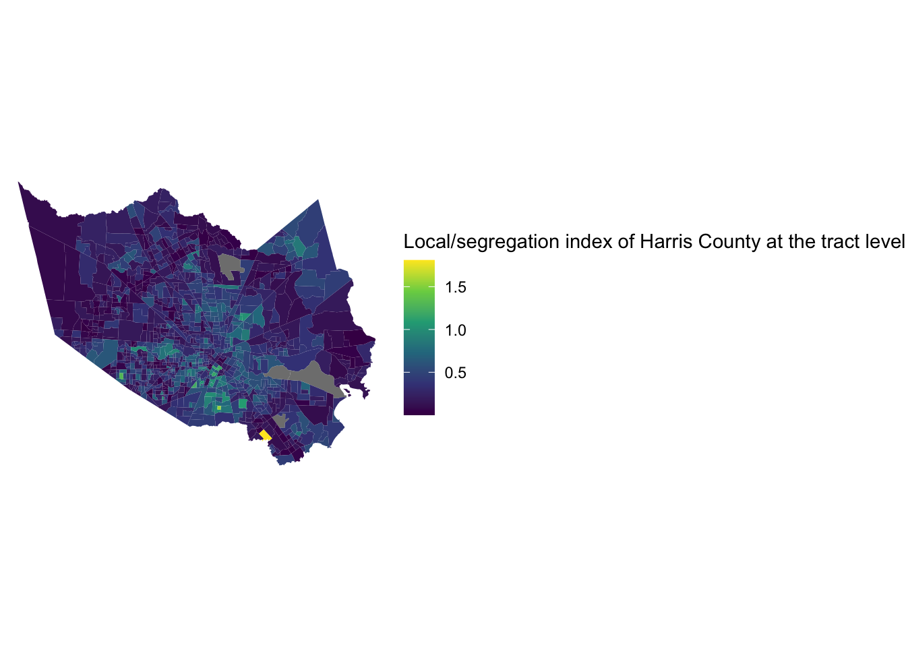

Mapping Segregation in R
R segregation package allows us to calculate segregation measures.
The Mutual Information Index (M)
Theil’s Information Index (H)
The index of Dissimilarity (D)
More information about segregation package can be found in the vignette. and r documentation Other practices can be found here.
Required packages
library(segregation) # to calculate segregation index
library(tidycensus) # to obtain demographic data from the Census
library(tidyverse) # to clean the data
library(viridis) # to map with colors
library(tigris) # to obtain TIGER/Line shapefiles from the Census
#If you have not installed the Census API Key, you need to do this.
#census_api_key("YOUR KEY GOES HERE")We first try with Illinois. We could expect that the Chicago Metropolitan area would be most segregated. Get the demographic data of Illinois using get_acs in tidycensus package.
il_data <- get_acs(geography = "county",
variables = c(white = "B03002_003",
black = "B03002_004",
asian = "B03002_006",
hispanic = "B03002_012"),
state = "IL")## Getting data from the 2016-2020 5-year ACSCalculate segregation index
dissimilaritycalculates the total segregation between group and unit.
il_data %>%
filter(variable %in% c("black", "white")) %>%
dissimilarity(group = "variable", unit = "GEOID", weight = "estimate")## stat est
## 1: D 0.4166082mutual_totalcalculates total segregation for M and H.
il_data %>%
mutual_total(group = "variable",
unit = "GEOID",
weight = "estimate")## stat est
## 1: M 0.1074927
## 2: H 0.1032790mutual_localcalculates local segregation, decomposed by units or groups. Here ourunitis GEOID (geographical unit) and ourgroupis race variable. We will use this segregation index for mapping.
il_local_seg <- il_data %>%
mutual_local(group = "variable",
unit = "GEOID",
weight = "estimate",
wide = TRUE)Then we make the Illinois local segregation data we had above into a merged data calling shapefiles from the Census using counties in tigris package. We merge it by GEOID.
il_local_seg_geom <- counties("IL", cb=TRUE)%>%
left_join(il_local_seg, by = "GEOID")Plotting segregation data
Finally plot the local segregation index at the county level using ggplot.
ggplot(il_local_seg_geom, aes(fill=ls)) +
geom_sf(color = NA) +
coord_sf(crs = 3435) +
scale_fill_viridis_c() +
theme_void() +
labs(fill = "Local/segregation index IL")The map shows the level of segregation at county level in Illinois, but unlike our expectation that Chicago area would be the most segregated, the map displays the opposite. Maybe we need to consider smaller geographical units, such as tracts or cities, because some of these units tend to have more diverse racial groups.
Let’s try with Illinois but at the tract level following almost similar steps.
# tract level
il_tract_data <- get_acs(geography = "tract",
variables = c(white = "B03002_003",
black = "B03002_004",
asian = "B03002_006",
hispanic = "B03002_012"),
state = "IL")
il_local_seg_tract <- il_tract_data %>%
mutual_local(group = "variable",
unit = "GEOID",
weight = "estimate",
wide = TRUE)
il_local_seg_tract_geom <- tracts("IL", cb=TRUE)%>%
left_join(il_local_seg_tract, by = "GEOID")
ggplot(il_local_seg_tract_geom, aes(fill=ls)) +
geom_sf(color = NA) +
coord_sf(crs = 3435) +
scale_fill_viridis_c() +
theme_void() +
labs(fill = "Local/segregation index IL at the tract level")
We now have a better map, higher (brighter area) segregation in Chicago area.
This time let’s focus only on Cook County whose county seat is Chicago.
# county level : Cook county, IL
cook_data <- get_acs(geography = "tract",
variables = c(white = "B03002_003",
black = "B03002_004",
asian = "B03002_006",
hispanic = "B03002_012"),
state = "IL",
county = "Cook County")
cook_local_seg <- cook_data %>%
mutual_local(group = "variable",
unit = "GEOID",
weight = "estimate",
wide = TRUE)
cook_local_seg_geom <- tracts(state = "IL", county = "Cook County", cb=TRUE)%>%
left_join(cook_local_seg, by = "GEOID")
ggplot(cook_local_seg_geom, aes(fill=ls)) +
geom_sf(color = NA) +
coord_sf(crs = 3435) +
scale_fill_viridis_c() +
theme_void() +
labs(fill = "Local/segregation index of Cook County at the tract level")Let’s do one more example with Harris County of Texas whose largest city is Houston.
# county level : Harris county, TX
harris_data <- get_acs(geography = "tract",
variables = c(white = "B03002_003",
black = "B03002_004",
asian = "B03002_006",
hispanic = "B03002_012"),
state = "TX",
county = "Harris County")
harris_local_seg <- harris_data %>%
mutual_local(group = "variable",
unit = "GEOID",
weight = "estimate",
wide = TRUE)
harris_local_seg_geom <- tracts(state = "TX", county = "Harris County", cb=TRUE)%>%
left_join(harris_local_seg, by = "GEOID")
ggplot(harris_local_seg_geom, aes(fill=ls)) +
geom_sf(color = NA) +
coord_sf(crs = 3435) +
scale_fill_viridis_c() +
theme_void() +
labs(fill = "Local/segregation index of Harris County at the tract level")